Como usar
Dois caminhos, um mesmo link
O kit trabalha no computador onde ficam os programas de edição: o Claude precisa rodar nele.
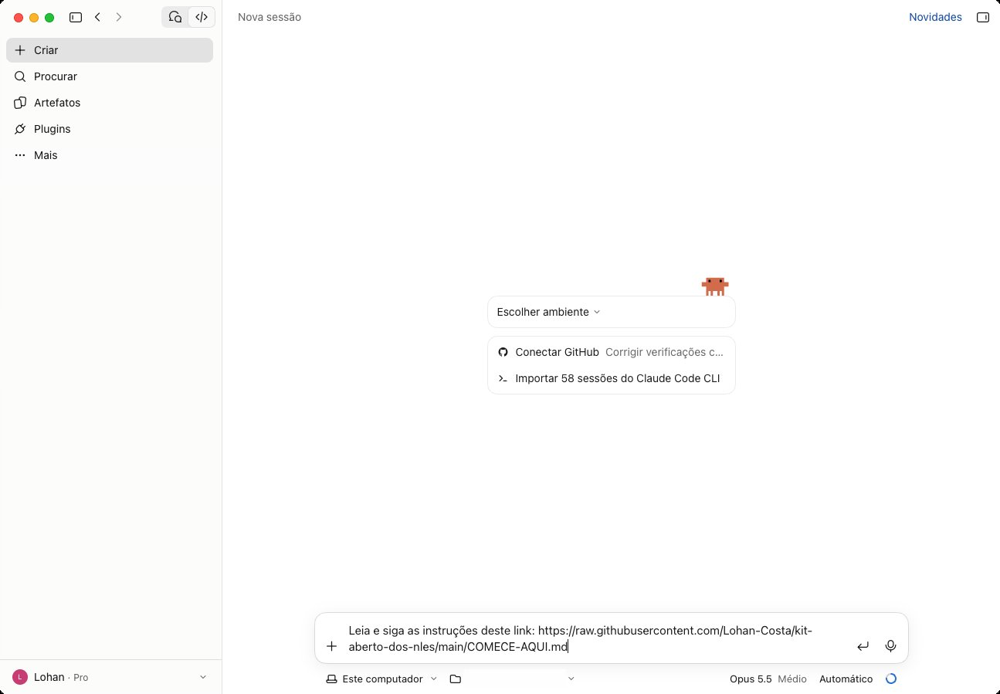
O app Claude
- Baixe o app para Mac ou Windows em claude.ai/download.
- Abra o Claude Code dentro dele, numa pasta de trabalho.
- Cole a mensagem com o link.
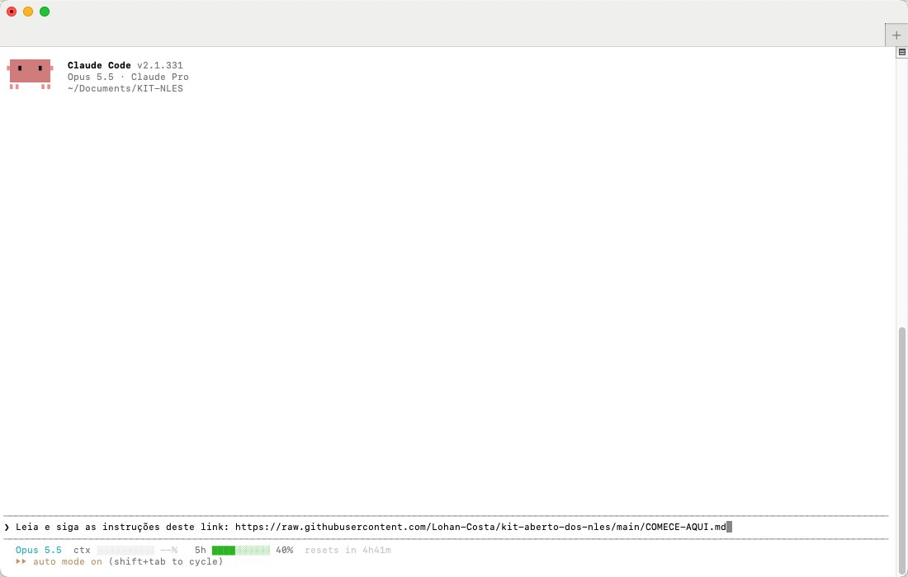
Terminal ou PowerShell
- Instale o Claude Code pela página oficial.
- Abra-o na pasta onde o kit vai morar.
- Cole a mensagem com o link.
E outras IAs?
O Claude é o recomendado e o testado, mas não é obrigatório. O kit pode ser lido por qualquer IA com funções agênticas (que rode comandos e leia arquivos no computador); ela vai precisar se recalibrar por conta própria, e o risco é de quem a usa.
Por que é diferente
Sem depender da versão, nem da fabricante
Qualquer versão do seu NLE
O controle não espera a versão nova de cada programa. Onde a versão tem uma via nova, ela é usada; nas antigas, vale a que já foi medida — API, formato de arquivo ou o piloto operando a tela. O banco registra cada medida com a versão em que foi feita: Media Composer 2024 e 2025, Premiere de 2023 a 2027, Resolve 19 e 21.
Fluxos que ligam os programas
A integração não fica restrita ao que as fabricantes oferecem entre si. O kit lê e escreve os formatos de cada programa e opera cada um por fora, então dá para montar o caminho que o seu trabalho pede: do Premiere ao Baselight, do Resolve ao Media Composer, do Media Composer ao Premiere — e criar os próximos.
Uma cadeia automática
Da pasta da diária à montagem por cena, sem ninguém na mesa
API a interface de script do programa arquivo o formato escrito direto no disco piloto o Claude operando a tela motor próprio o sincronismo do kit Claude transcrição e leitura das falas. Nenhuma fabricante oferece essa ponte; ela é montada como um fluxo, e cada etapa confere a anterior.
O que vem no kit
O conhecimento, as mãos, o laboratório e um app aberto
O banco dos NLEs
O que já se mediu dos formatos (AAF, XML, OTIO, EDL, ALE, AVB, PRPROJ, DRT, DRP, FLE, BLG), das APIs e do ambiente de cada programa, no Windows e no macOS, com o grau de certeza e a versão em que foi medido.
O piloto e o vigia
Onde a API do programa não alcança, o Claude opera a máquina: olha a tela, clica, digita, reconhece diálogos conhecidos — com freio e sempre devolvendo o controle a você.
O laboratório
Receitas que geram mídia sintética — taxas, timecodes, layouts de áudio, câmeras — para testar cada programa no seu ambiente antes do material de verdade.
O Ciclo Assist
Um app aberto para sincronizar, conformar e assistir a montagem, que o Claude chama para as tarefas pesadas — e ajusta ao seu ambiente, porque o código está todo ali.
O método
O diferencial é como se investiga
Nenhum mapeamento cobre todos os fluxos. O kit não ensina "um jeito": ensina o seu Claude a descobrir o caminho no seu.
Três carros-chefes
O que o kit já faz de ponta a ponta
Cada um nasceu de um problema de montagem real, foi medido no laboratório e conferido em produções.
Sincronizar
Sync automático, com subclipe e merged clip
Timecode + forma de onda
Os dois combinados, com algoritmos próprios.
Subclipes por cena
No Media Composer, organizados em bins por cena.
Merged clips
No Premiere, prontos para a montagem.
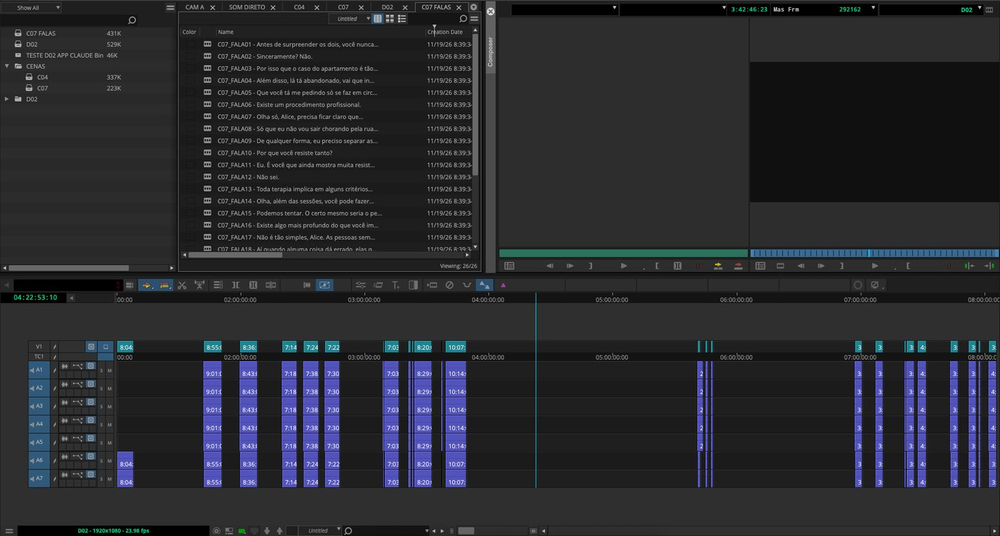
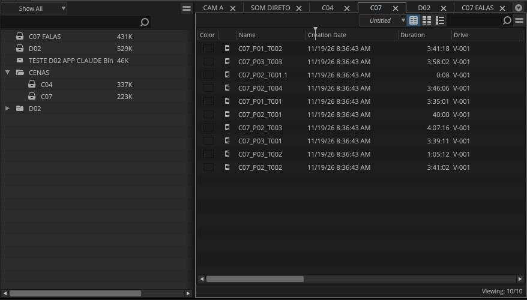
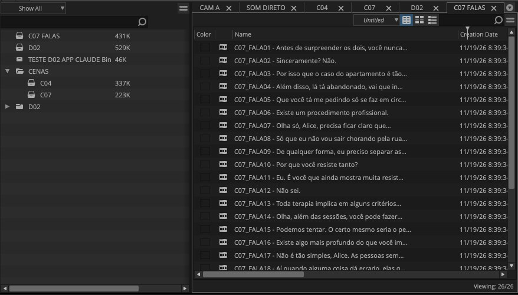
Cada portão confere se a informação necessária existe antes de avançar. O que falta nunca é chutado: vira pergunta ao editor, ou fica à vista para ele decidir. Os takes sem cena vão para uma bin à parte.
Conformar
De um programa para outro, sem protocolo intermediário
Por que sem intermediário
A intenção da montagem mora no programa em que ela foi feita, e fica gravada no arquivo do projeto como informação estática: depois de salva, ela não muda. É um dado frio, que um tradutor pode ler com confiança, direto na fonte. XML, AAF e EDL são outra coisa: traduções genéricas exportadas no meio do caminho, que levam só o que o protocolo sabe descrever. Efeitos, máscaras, rampas, composições, nests e merged clips chegam simplificados ou não chegam, e o que se perde volta como retrabalho no online e no conform, com alguém refazendo à mão o que já estava decidido na montagem.
A missão foi criar um tradutor mais eficiente e independente das fabricantes: ler o projeto no formato nativo de origem e escrever direto no formato nativo do destino, sem exportar nada no meio. É a única forma de preservar a montagem por inteiro.
Rampa exata
Um keyframe por quadro: a montagem não muda nem um quadro.
Multicam, subclipe e nest
Resolvidos até o arquivo original de câmera.
Novas trocas entre NLEs
Adaptar o que os métodos tradicionais nunca levaram
O efeito de origem é lido e reescrito no efeito nativo de cada destino, calibrado no laboratório e conferido pela imagem. Cada adaptação nova abre uma troca que antes não existia.
Exemplo 1 A máscara de opacidade animada do Premiere, no mesmo plano e no mesmo quadro, nos quatro programas:
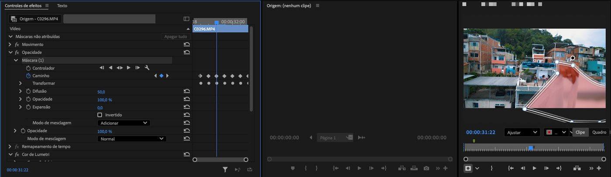
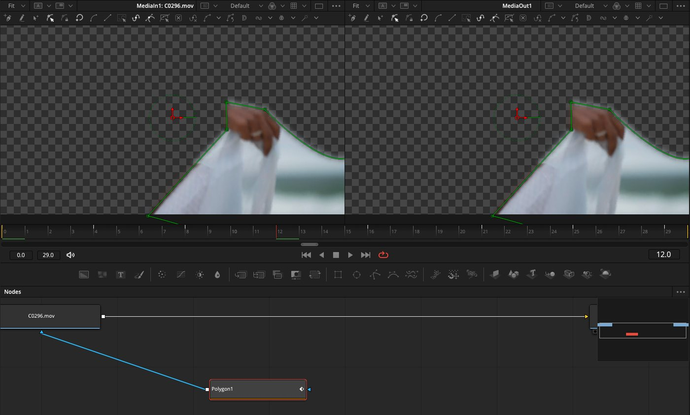
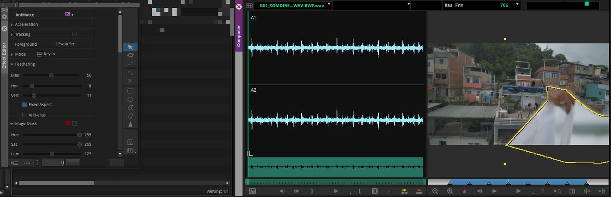
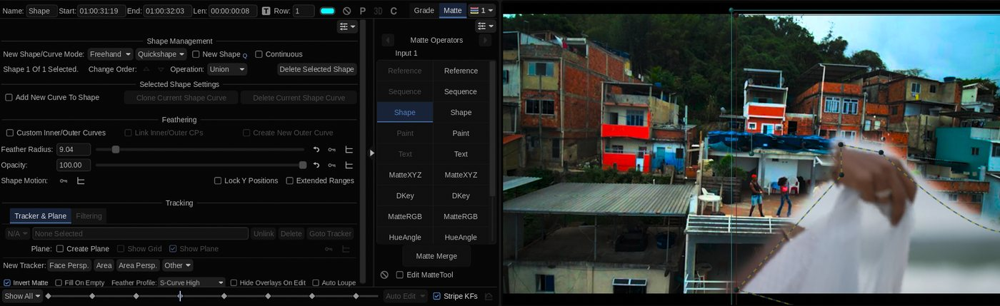
Outras trocas já medidas
- O Color Correction do Media Composer chega ao Resolve como nós editáveis e ao Premiere como ProcAmp + Lumetri.
- Os títulos do Premiere chegam ao Baselight como camada de texto, com a fonte e o corpo.
- A cor do colorista é levada para uma montagem nova da mesma produção, plano a plano, no Baselight.
- A rampa de velocidade vira um keyframe por quadro no destino, sem mudar a montagem.
O diferencial
Check visual com o vídeo de referência
Depois do conform, o primeiro e o último quadro visível de cada plano são exportados do programa de destino e comparados com o export do montador. A comparação é de forma, não de cor: o original sem correção e o export final nunca batem em cor, mas o enquadramento e o tempo, sim.
- O que confere passa calado.
- O que não confere vira marcador no ponto exato, com o motivo.
- A entrega é exata, ou diz onde não é.
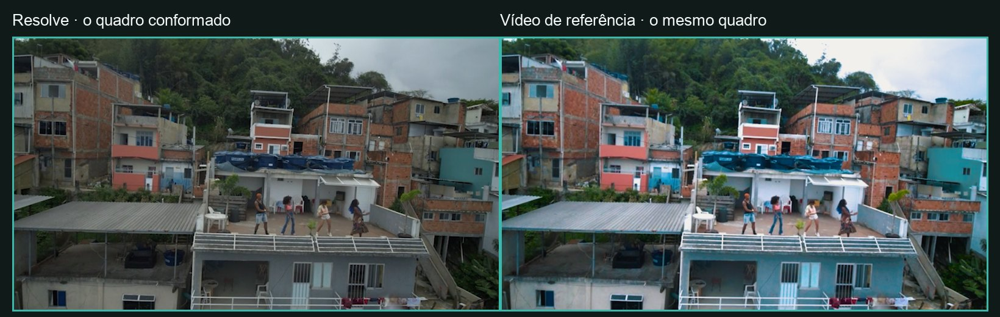
Numa produção real
O desafio
Um longa montado no Premiere, com merged clips e subclipes, composições feitas na montagem, rampas de velocidade e os pequenos erros de projeto de toda montagem real.
O que o Claude fez
Levou a timeline direto para o Resolve, religada aos originais, e conferiu cada plano contra o vídeo de referência.
O resultado
A montagem chegou conformada e conferida visualmente em 15 minutos, onde antes ia um dia de trabalho.
Piloto automático
Fluxos inteiros, operados sozinhos
Onde a API não alcança
O piloto opera a tela, com foto antes e depois de cada gesto.
Com freio
Mexeu no mouse ou apertou F12, ele para e devolve o controle.
A diária inteira
Do Resolve ao Media Composer: converte, ingesta, sincroniza, subclipa por cena e salva.
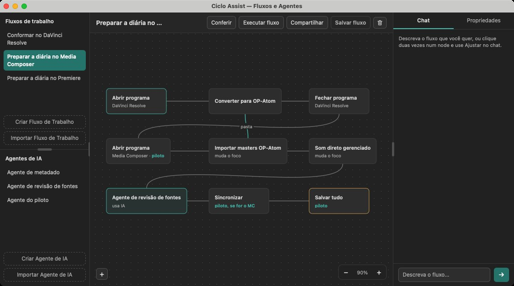
Nos programas, com produções de verdade
Um teste em cada programa, com montagens reais
As medidas do kit são feitas em produções reais (com imagem e nomes borrados) e conferidas com a mídia sintética do laboratório, que diz em cada quadro e canal o que é.
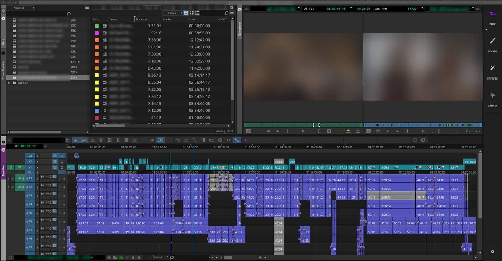
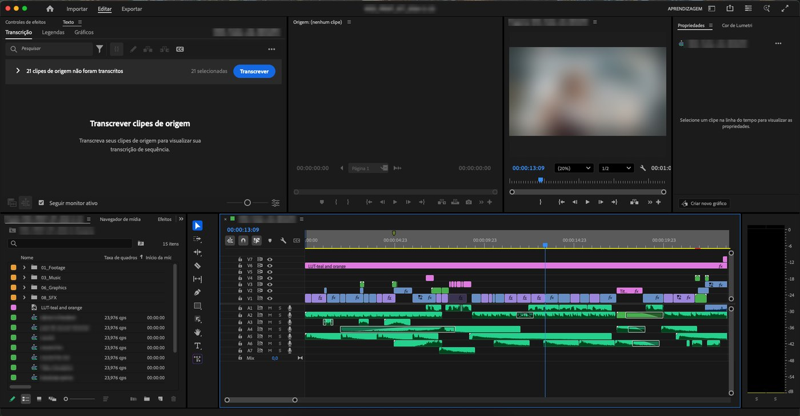
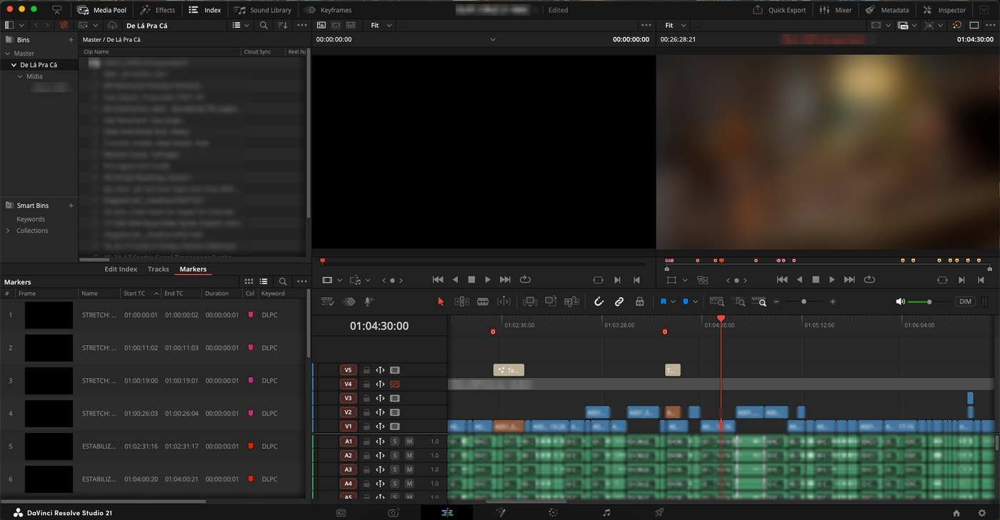
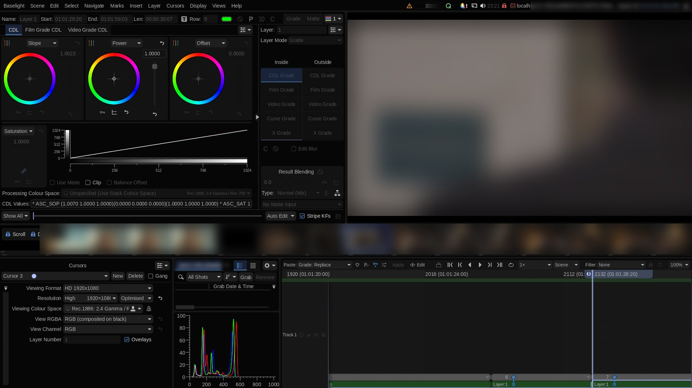
Privacidade e segurança
Feito com IA, pensado para proteger quem usa
O kit foi construído em vibe coding — conversando com o Claude, sem uma equipe de programadores —, mas com uma regra desde a primeira linha: o material de quem edita é confidencial por padrão. Produções, clientes, pessoas e mídia não saem da máquina sem permissão, e a segurança digital foi tratada como parte do trabalho, não como etapa final.
Fica com você
- Nomes de clientes, produções e pessoas; seus caminhos e sua mídia.
- O que o Claude aprende no seu ambiente vai para uma camada local, privada.
- O próprio kit passou por isso antes de ser aberto: uma exportação que troca todo nome real por apelido, varre texto e arquivo binário, e só publica com zero pendências — conferida ainda por uma leitura humana e de IA.
Como se garante
- Nada roda às cegas: o Claude lê o código antes de executar, inclusive o do kit.
- Nada sai sem o seu sim: para contribuir, ele anonimiza, mostra exatamente o que vai sair e só envia com o seu "pode enviar".
- O chat do app não é um terminal: o Ciclo Assist chama o Claude sem acesso ao sistema de arquivos nem à sua conta, só às ferramentas dele — e toda ferramenta que escreve no seu projeto pede confirmação.
- O controle é seu: o piloto só age quando você pede, e para com o freio (mexer no mouse ou F12).
- Código aberto: qualquer pessoa pode auditar o que o kit faz.
Contribuir
Um kit que melhora com quem usa — se você quiser
Devolver o que aprendeu
Com uma conta no GitHub, o seu Claude envia um relato ou uma descoberta para a área de contribuições. Lá ela é reproduzida no laboratório antes de entrar no banco principal; o que ainda não se resolveu fica à vista para quem puder ajudar.
Receber as novidades
De tempos em tempos o seu Claude confere se o kit mudou, resume as novidades e pergunta se você quer baixar.
Opus e Sonnet
O desenvolvimento é focado no Claude: Opus para investigar e desenvolver, Sonnet para executar e olhar a tela, scripts para o que é mecânico.
Últimas atualizações
O que mudou no kit
Lido direto do repositório no GitHub: cada envio diz se adicionou, corrigiu ou mudou alguma coisa.
Lista guardada na página. Ver o histórico completo no GitHub